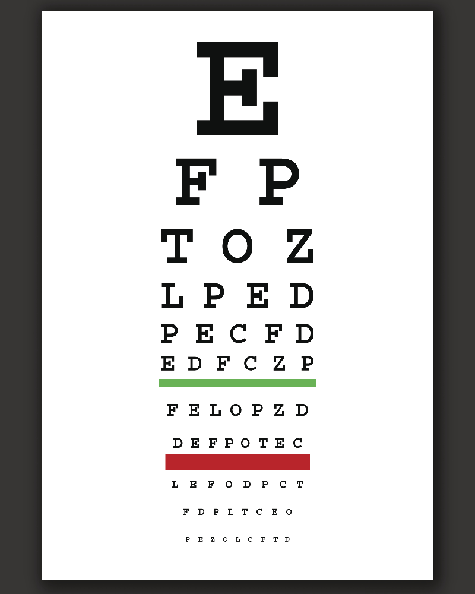
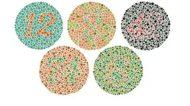

Pruebas Visuales
Prueba de Agudeza Visual
En esta prueba verás una serie de letras que van haciéndose cada vez más pequeñas. Tu objetivo es identificar correctamente cada una desde la distancia indicada. No te preocupes si algunas son difíciles de ver: la idea es medir cuán clara es tu visión a distintas distancias. Esta prueba nos ayuda a saber si necesitas algún ajuste en tus lentes o si tus ojos están viendo con la nitidez que deberían. Recuerda que no hay respuestas “incorrectas”, solo información sobre tu visión.
Prueba de Daltonismo
Aquí se te presentarán varios círculos llenos de colores y, entre ellos, aparecerán números escondidos. Tu tarea es intentar identificar los números dentro de los círculos. No te preocupes si no logras ver algunos: muchas personas tienen dificultad con ciertos tonos, especialmente rojo y verde. Esta prueba sirve para detectar problemas en la percepción de los colores y nos ayuda a entender cómo tu cerebro interpreta lo que tus ojos ven. Es divertida y rápida, y no requiere memorizar nada.
Prueba de Campo Visual
Para esta prueba mirarás un paisaje que aparecerá frente a ti. Mientras te concentras en el centro, trata de describir todos los detalles que puedas percibir, incluso los que aparecen en los bordes de tu vista. Algunas cosas aparecerán “fuera” de tu enfoque principal, y eso es normal: estamos evaluando tu visión periférica. Esta prueba es importante porque nos permite descubrir si hay zonas que no estás viendo y así detectar posibles problemas de visión lateral o áreas ciegas que pueden pasar desapercibidas.
Prueba de Contraste
En esta prueba activa el modo de alto contraste y la escala de grises de la página para que puedas ver los elementos con mayor claridad. Tu tarea será identificar y percibir todos los detalles y tonos de gris presentes. Esto es especialmente útil para situaciones con poca luz o ambientes complicados, donde distinguir objetos puede ser difícil. La prueba nos ayuda a entender qué tan bien tus ojos logran diferenciar entre sombras y colores sutiles, algo que es clave para tu seguridad y comodidad visual.